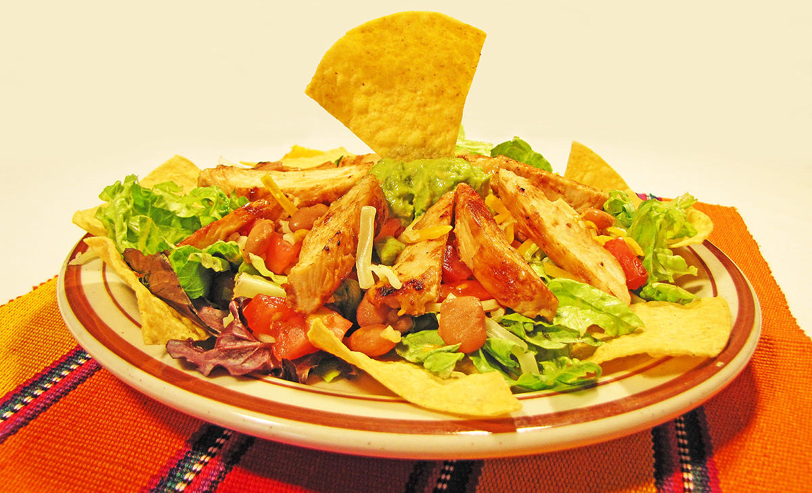
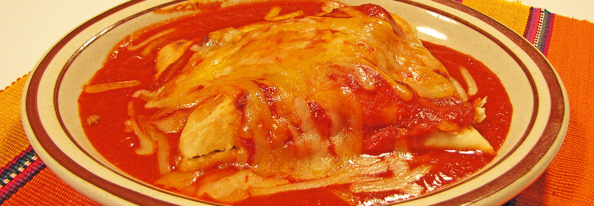
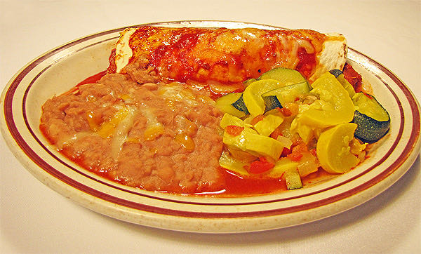
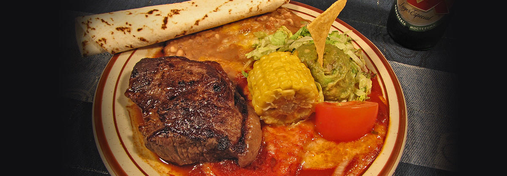
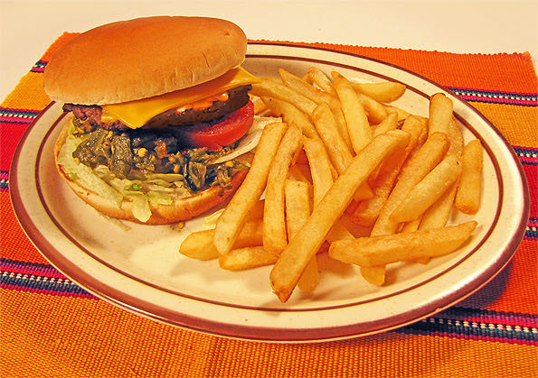
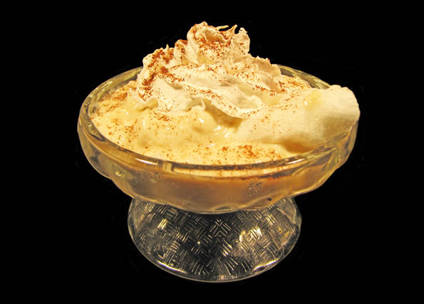
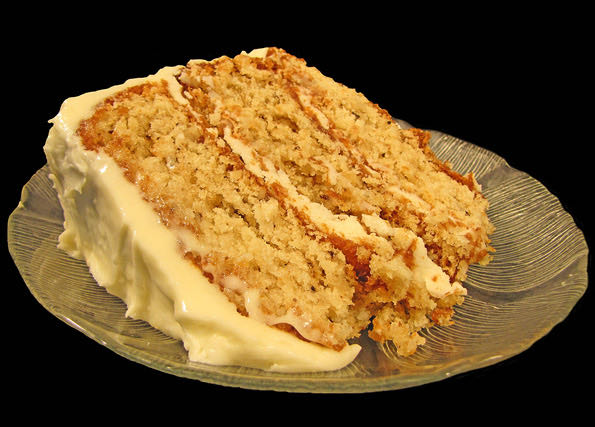
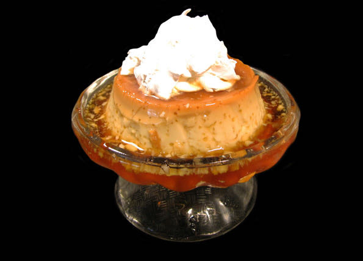
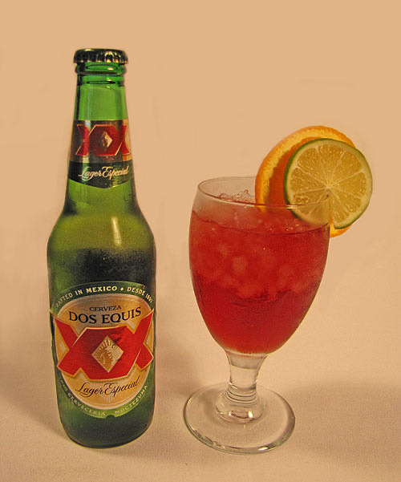

[Menu] Pete’s Cafe · Belen, NM
Red or green,every day.
All dinners are served with red or green chile. A gluten-free vegetarian green chile is available. Ask your server about today’s prices.
Appetizers, salads, seniors & children

Appetizers
- Theresa’s Chile con Queso
A family recipe: a blend of creamy cheeses, seasonings and just the right amount of jalapeño.
- Fresh Guacamole
With house chips.
Salads
- Fresh Garden Salad
- Taco Salad
Ground beef or grilled chicken, in a compuesta shell.
Senior plates
- One Rolled Enchilada
Cheese, beef or chicken, red or green chile, one side (rice, beans, calabacitas or small salad) and one sopaipilla.
- One Chile Relleno
Red or green chile, one side (rice, beans, calabacitas or small salad) and one sopaipilla.
Children’s plates
- Beef Taco
With beans, rice and one sopaipilla.
- Beef or Bean Burrito
With rice.
- Burrito Hot Dog
With french fries.
Special dinners

- Taco Plate
Two crisp corn tacos with ground beef or chicken, two sides: beans, rice or calabacitas.
- Pete’s Shrimp Taco Plate
Two soft flour or corn tacos with grilled shrimp, garnish and a creamy chipotle sauce, two sides and two sopaipillas.
- Tostada Plate
Two beef, chicken or bean tostadas, rice or calabacitas, and two sopaipillas.
- Huevos Rancheros Plate
Two eggs, rice or calabacitas, and two sopaipillas.
- Chile Relleno Plate
Two rellenos with beans, rice or a small salad, and two sopaipillas.
- Navajo Taco Plate
Fry bread topped with ground beef, whole beans, cheese and garnish.
- Chicken Flauta Plate
Three rolled chicken flautas, guacamole and sour cream, with rice, beans or calabacitas.
- Pete’s Quesadillas
A grilled flour tortilla filled with cheese and fresh chopped green chile, guacamole and sour cream. Chicken, or ground beef with onion.
Burrito & stuffed sopaipilla dinners

Burrito dinners
- Two Beef Burritos
Refried beans or calabacitas.
- Two Bean Burritos
Rice or calabacitas.
- One Beef & One Bean
Or combo, with rice or calabacitas.
- Carne Adovada Burrito
Refried beans and calabacitas.
- Two Chicken Burritos
Rice or calabacitas.
Stuffed sopaipilla dinners
- Two Beef Stuffed Sopaipillas
Refried beans or calabacitas.
- Two Bean Stuffed Sopaipillas
Rice or calabacitas.
- One Beef & One Bean
Or combo, with rice or calabacitas.
- Carne Adovada Stuffed Sopaipilla
Refried beans and rice.
- Two Chicken Stuffed Sopaipillas
Rice or calabacitas.
Combination & enchilada dinners

Dinner combinations
- Enchilada · Taco · Tamale
Cheese enchilada, beef taco, tamale; two of beans, rice or calabacitas.
- Enchilada · Taco · Relleno
Cheese enchilada, beef taco, chile relleno; two of beans, rice or calabacitas.
- Enchilada · Taco · Tostada
Cheese enchilada, beef taco, bean tostada; two of beans, rice or calabacitas.
Enchilada dinners · rolled or flat
- Cheese
- Beef
- Chicken
- Carne Adovada
- Shrimp & Sour Cream
Each with two of beans, rice or calabacitas. Extra enchilada, blue corn tortillas and egg on top available.
Carnes (meats)

- Carne Adovada
With a garden salad, refried beans, potatoes and a tortilla.
- Steak Tampiqueño
8 oz. choice sirloin, garden salad, rice or potatoes, Texas toast and our spicy house-made sauce.
- Ground Round Steak
Topped with red or green chile and melted cheese; garden salad, rice or potatoes, Texas toast.
- Grilled Chicken Breast
With guacamole, rice or calabacitas, and a tortilla.
- Steak n’ Enchilada
8 oz. choice sirloin with mini corn on the cob, beans, guacamole and a tortilla.
A la carte
- Enchiladas
Two rolled or flat corn tortillas with cheese, beef or chicken, red or green chile, two sopaipillas.
- Burrito
Flour tortilla with beans, beef or chicken, red or green chile.
- Stuffed Sopaipilla
Beans, beef or chicken, red or green chile.
- Bowl of Red or Green Chile
Served with two sopaipillas.
- Bowl of Beans
Whole or refried, with two sopaipillas.
- Bowl of Chile & Beans
With two sopaipillas.
- Chile Relleno
With a small salad.
- Tamale
With red or green chile, or no chile.
- Taco
Crisp beef or chicken, or soft with red or green chile.
- Tostada
Bean, beef or chicken, red or green chile.
Combos of any two fillings, sides of beans, rice, calabacitas or chile, carne adovada, sour cream, extra cheese and extra sopaipillas are available for an additional fee.
Pete’s burgers

- Good Old-Fashioned Burger
Lettuce, tomato, pickles, onion, with potato chips or fries.
- Chile con Queso Burger
Topped with a scoop of Theresa’s house-made chile con queso, sautéed onions, fries.
- Tortilla Burger
Fresh chopped green chile and cheese, with fries or a garden salad.
Add cheese, guacamole, an extra patty or fresh chopped green chile for an additional fee.
Desserts



All our desserts are made in-house.
- Pete’s Adobe Pie
Slice.
- Traditional Natillas
- Traditional Flan
- Chocolate · Carrot · Italian Cream Cake
By the slice.
- Coconut Cream or Pineapple Cream Pie
By the slice.
- Ice Cream
With chocolate or caramel sauce.
Beverages
Soft drinks & hot
Coffee, hot tea, iced tea · Coke, Diet Coke, Dr Pepper, Sprite, orange, root beer · lemonade, milk, hot chocolate. One free refill on soft drinks.
House favorites
- Pete’s Wine Margarita
Excellent with any of our New Mexican entrées.
- Pete’s Sangria
Ridiculously refreshing, made with 100% natural orange juice.
St. Clair wines · glass or bottle
Merlot · Cabernet Sauvignon · Pinot Grigio · Mimbres Red · Chardonnay

Beer
Domestic: Coors, Coors Light, Miller Genuine Draft, Miller Lite, Michelob Ultra, Budweiser, Bud Light, Bud Light Lime, O’Doul’s (non-alcoholic)
Imported / craft: Tecate, Corona, Carta Blanca, Dos XX (amber or lager), Negra Modelo, Bohemia, Samuel Adams, Fat Tire, Blue Moon